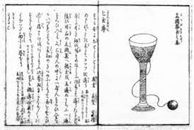

History of the Kendama
Before you begin playing with your first Kendama, learn about where they came from!
Before you begin playing with your first Kendama, learn about where they came from!
Kendama's go way back:
History
A Kendama is made up of the ken (stick) with a point at one end, three cups, and the tama (ball) with a small hole in one end. The cups on either side of the sarado (cross piece/cup body) are called the ozara (big cup) and kozara (small cup). The ball is connected to the stick by a roughly 40-centimeter (16-inch) piece of string. The pointed end of the stick is the kensaki (spike) with which the player can attempt to spear the ball. On the reverse side is another cup called the chuzara (medium cup). The round hole in the ball is just the right size for the spike. The game is basically played by tossing the ball and attempting to catch it in one of the cups or to spear it with the point of the stick. Although it may sound simple, there are a nearly unlimited number of specific tricks for doing so. Many people may think that Kendama was invented in Japan, but this is not actually the case. While many different theories exist, there are records indicating that Kendama originated in France in the sixteenth century.
In France, this game was called bilboquet. Bil means "ball," and bouquet means "small tree." This word expresses the fact that the game involved playing with a small wooden ball. The game as it was played then was different from what we know as kendama today; there was a large cup and a small cup on either end of a stick, to which a ball was attached with a string. The player would continually toss and catch the ball, alternating between the two cups.
It is said that bilboquet was brought to Japan around the middle of the Edo period in around 1777 or 1778. At the time, kendama was apparently enjoyed by adults as a sort of drinking game, where a player who made a mistake was forced to drink more.
From around 1945 to 1955, after World War II ended, kendama were sold in candy stores along with other popular toys, such as menko, bidama, and beigoma. In 1975, children's author Issei Fujiwara founded the Japan Kendama Association, which standardized Kendama for competitive use and created standardized rules for the purpose of allowing a greater number of people to play the game together the same way.
With a set of rules and specifications for the equipment in place, Kendama began to grow in popularity as a competitive sport. In addition to a trophy from the Minister of Education, Culture, Sports, Science, and Technology, which is given to the winner of a Kendama competition for elementary school students, there are tournaments for both students and adults held around the country, and Kendama enthusiasts are working to increase the popularity of the game overseas.
Nowadays, the word Kendama is understood all around the world, with competitions even being held in places, such as the USA and Europe.